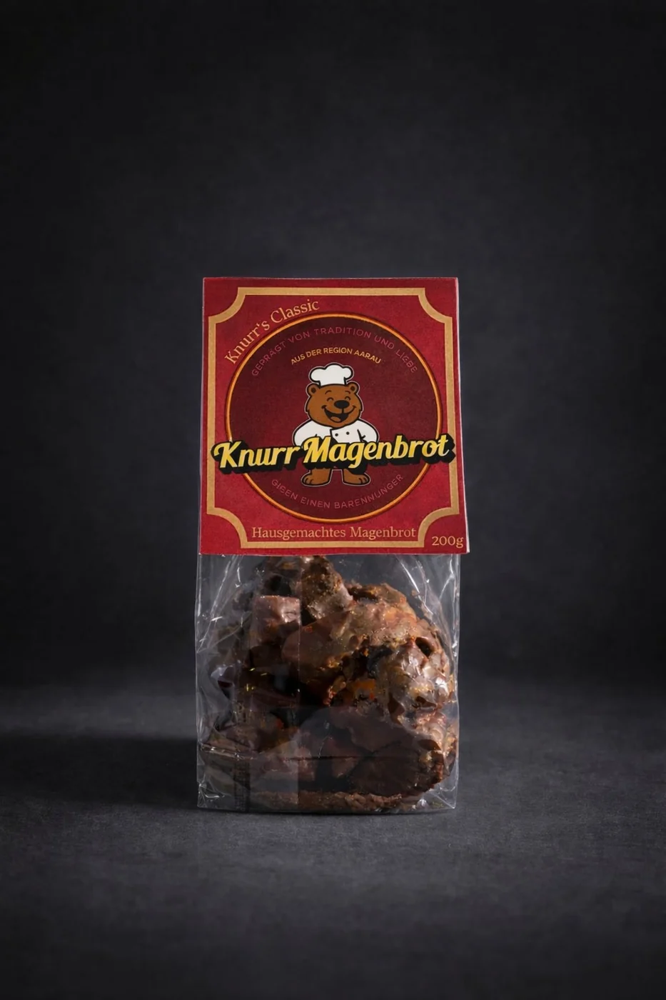
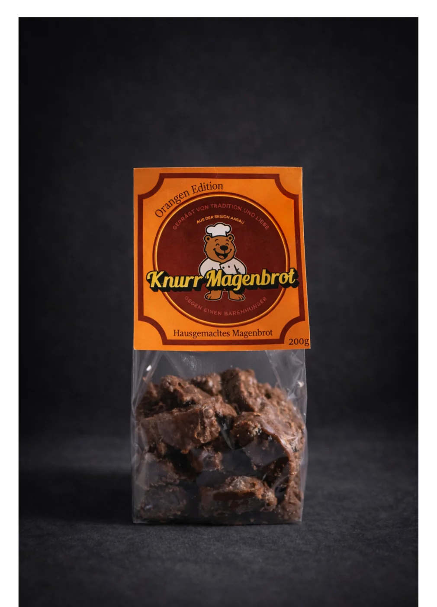
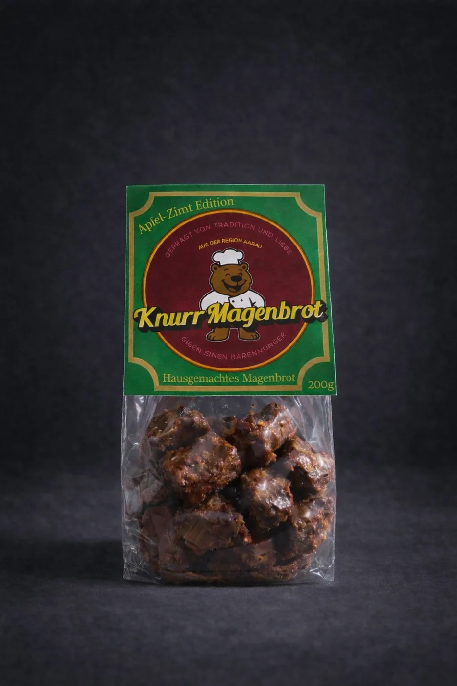
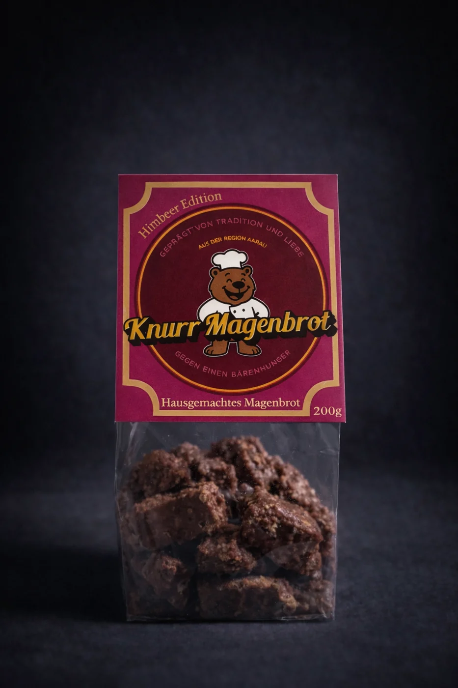

Knurr's Classic
Der Geschmack, mit dem alles begann.
Unser Classic steht für das, was Magenbrot ausmacht: schokoladig, würzig und genau richtig, wenn der Bärenhunger zuschlägt.
SchokoladeGewürzeKlassisch
Classic anfragen →Vier Sorten, ein Grundgedanke: Schweizer Tradition mit Charakter. Hier kannst du unsere Produkte entdecken – bestellen oder grössere Mengen anfragen kannst du direkt über den Kontakt.

Unser Classic steht für das, was Magenbrot ausmacht: schokoladig, würzig und genau richtig, wenn der Bärenhunger zuschlägt.

Die Orangen Edition verbindet die vertraute Würze von Magenbrot mit einer fruchtigen Zitrusnote. Ein bisschen heller, ein bisschen überraschender.

Apfel und Zimt treffen auf unseren Magenbrot-Charakter. Eine Sorte mit vertrauten Aromen und einem besonders gemütlichen Profil.

Unsere Himbeer Edition bringt eine fruchtige Beerennote in die Welt des Magenbrots – farblich auffällig, geschmacklich eigenständig.
Für Firmen, Events, Vereine oder Geschenke sind auch grössere Mengen und individuelle Lösungen möglich. Sag uns, was du vorhast – wir melden uns persönlich.